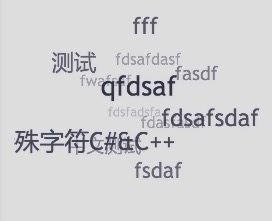

Hexo 标签云插件

这里是效果预览站点
package.json 中添加依赖: "hexo-tag-cloud": "2.0.*"npm install 命令hexo/themes/landscape/layout/_widget/tagcloud.ejs<% if (site.tags.length) { %>
<script type="text/javascript" charset="utf-8" src="/js/tagcloud.js"></script>
<script type="text/javascript" charset="utf-8" src="/js/tagcanvas.js"></script>
<div class="widget-wrap">
<h3 class="widget-title">Tag Cloud</h3>
<div id="myCanvasContainer" class="widget tagcloud">
<canvas width="250" height="250" id="resCanvas" style="width=100%">
<%- tagcloud() %>
</canvas>
</div>
</div>
<% } %>
next/layout/_macro/sidebar.swig, 然后添加如下内容。{% if site.tags.length > 1 %}
<script type="text/javascript" charset="utf-8" src="/js/tagcloud.js"></script>
<script type="text/javascript" charset="utf-8" src="/js/tagcanvas.js"></script>
<div class="widget-wrap">
<h3 class="widget-title">Tag Cloud</h3>
<div id="myCanvasContainer" class="widget tagcloud">
<canvas width="250" height="250" id="resCanvas" style="width=100%">
{{ list_tags() }}
</canvas>
</div>
</div>
{% endif %}
apollo/layout/archive.jade 文件，并且把 container 代码块修改为如下内容:...
block container
include mixins/post
.archive
h2(class='archive-year')= 'Tag Cloud'
script(type='text/javascript', charset='utf-8', src='/oj-code/js/tagcloud.js')
script(type='text/javascript', charset='utf-8', src='/oj-code/js/tagcanvas.js')
#myCanvasContainer.widget.tagcloud(align='center')
canvas#resCanvas(width='500', height='500', style='width=100%')
!=tagcloud()
!=tagcloud()
+postList()
...
hexo clean && hexo g && hexo s 来进行本地预览, hexo clean 为必须选项。hexo g -d 或者 hexo d -g 这类组合命令。详情见: Issue 7看 Todo.md
提交 issue 和截图以及 log
现在 hexo-tag-cloud 插件支持自定义啦。非常简单的步骤就可以改变你的标签云的字体和颜色，还有突出高亮。
# hexo-tag-cloud
tag_cloud:
textFont: Trebuchet MS, Helvetica
textColour: \#333
textHeight: 25
outlineColour: \#E2E1D1
hexo c && hexo g && hexo s 来享受属于你自己的独一无二的标签云吧。